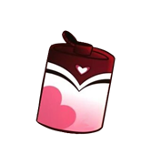
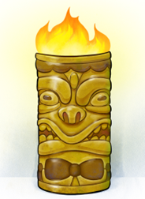

Una dinámica que expone el viaje entre distintas realidades. A continuación se presentan tres opciones de bebida ¿cuál tomarás tú?
Romulan Ale Licor destilado sin gas vertido de un matraz con alta potencia.Beelzejuice

Tipo de whiskey producido en el infierno con un pez al costado.Flaming Homer

Mezcla de diferentes bebidas alcohólicas y jarabe para la tos con una flama en la parte superior.